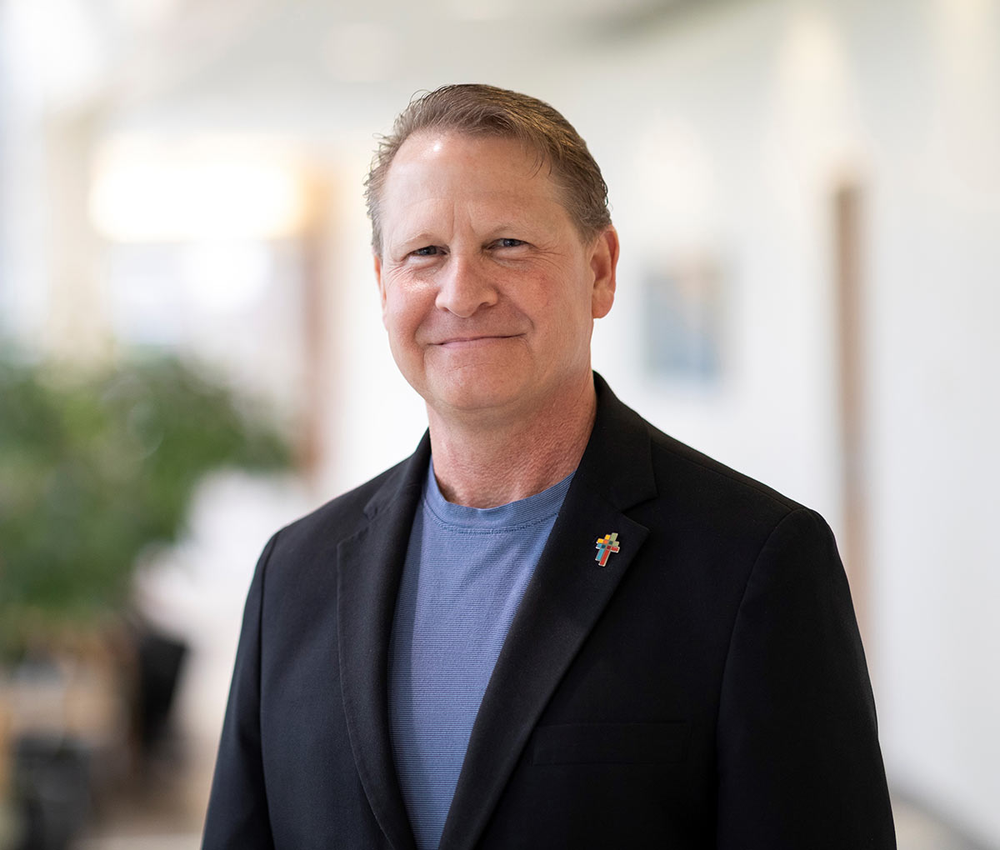

I have spent more than three decades walking with people through some of life's hardest moments. As a pastor and board-certified chaplain, I have sat beside families in emergency rooms, intensive care units, hospice dwellings, and funeral homes. I have been present during moments of unimaginable loss yet have witnessed remarkable resilience.
My own cancer diagnosis changed me in ways no classroom or ministry experience ever could. It deepened my understanding of suffering and strengthened my conviction that hurting people need more than flippant advice and imprudent answers—they need compassionate presence, practical encouragement, and genuine hope.
I hold a Master of Arts in Ministry from Moody Theological Seminary and am an Advanced Practice Board Certified Chaplain. But more important than any credential is my desire to come alongside people who are weary and depleted and remind them they are neither forgotten nor alone.
